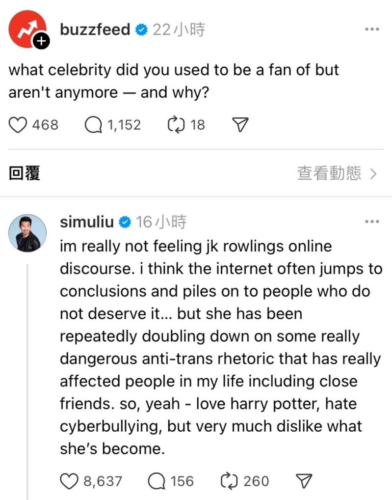
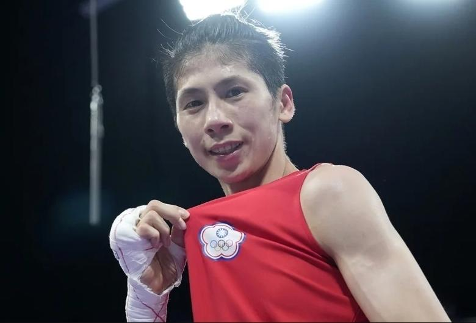

台湾拳后林郁婷出战巴黎奥运，顶着比赛与舆论压力挺进四强，许多人为她加油，更为她抱不平，更遭到「哈利波特」作者JK罗琳转贴文章接连影射她是「跨性别选手」，国际奥会则发出声明指出参加比赛的选手都符合比赛资格，性别以及年龄，如今就连漫威男星「尚气」刘思慕都对JK罗琳的言论不满，「她一再强调一些非常危险的反跨性别言论，这些言论确实影响了我生活中的人，包括亲密的朋友」，更直言「不喜欢现在的她」。
外媒「Buzzfeed」的Thread昨日发文，提问「有哪些名人本来是你的偶像，但现在已经不是了，为什么？」其中竟赫见刘思慕在底下留言，并且点名JK罗琳，「我对JK罗琳的网络言论很无感」，并说很多人都会草率下结论，轻易将矛头指向不应该被这样对待的人，最后更发文，「我喜欢哈利波特，我讨厌网络霸凌，但我不喜欢现在的JK罗琳」，显见对于JK罗琳近日的跨性别言论感到不满。

JK罗琳先前发文包括台湾拳后林郁婷在内的数名女拳击手，可能是跨性别选手，并且语出惊人喊「好疯狂」、「扼杀女性」，遭受抨击后再度发文，引用外媒评论，改为猜测选手们可能是「性发展障碍」，也就是旧称的「双性人」，更抨击「无法改变出生的方式，但可以选择不要作弊」，引发全球网友激烈热议。
幸好，林郁婷在日前8强赛取胜后，确定进帐生涯首面奥运奖牌，而她4强赛的对手将是土耳其选手卡拉曼（Esra Yıldız Kahraman），也被看好有机会取胜晋级金牌战，改写台湾拳击在奥运的最佳战绩。
